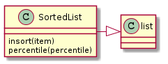

This is a Data Collection that extends the List ADT to have an insort method that will insert an item in sorted order. If append or other non-sorting methods are used then this will not do anything meaningful, but if only insort is used (or a sort is called after many appends), then the insort will maintain the ordering.
Todo
Get rid of numpy
| bisect((a, x[, lo[, hi]]) -> index) | bisect_right(a, x[, lo[, hi]]) -> index |
| bisect.insort(a, x[, lo[, hi]]) | insort_right(a, x[, lo[, hi]]) |

I added the percentile method to get some statistics from this but it seems like this is going down a bad path so I’m stopping at that.
Note
it looks like numpy has added an append. I think I’ll use that instead.
| SortedList | |
| SortedList.insort | |
| SortedList.append | |
| SortedList.sort | |
| SortedList.percentile |